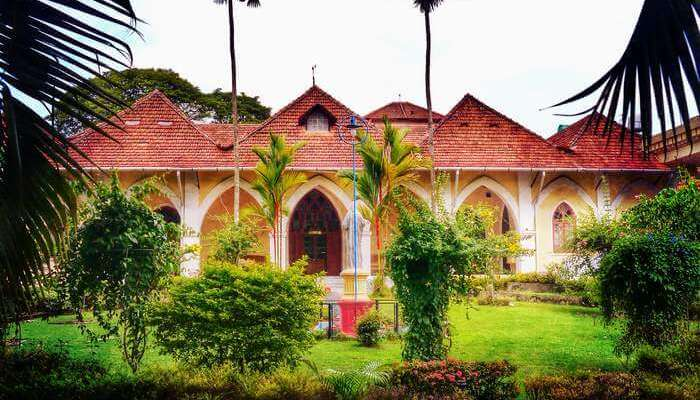

Mattancherry Palace

Mattancherry Palace, located in Palace Road and built by the Portuguese as early as 1557, is considered to be one of the important places to visit in Cochin in 1 day. Popularly known as Dutch Palace, it has the style and architecture that resembles a typical traditional Kerala house with four individual wings and a patio in between.
Don’t miss: Like every Kerala house, Mattancherry palace also has a courtyard in the center. The courtyard has a beautiful temple of Bhagavati, the protective deity of Kochi community. There are two other temples of Shiva and Krishna inside the palace. Also, the collection of frescos and paintings covering a large portion of the palace walls is worth seeing. However, don’t restrict to the interiors of the palace. Take in the beauty of its famous sprawling gardens and manicured lawns, that earned it a spot among the best tourist places in Kochi.
Indo-Portuguese Museum

The Indo-Portuguese Museum is an amalgamation of Indian and Portuguese culture and architecture. Located in Fort Kochi area, it was built by former Bishop of the city, Joseph Urethra. The museum is divided into 5 wings exhibiting Altar of Furniture, Treasure, Procession, Civil Life and Cathedral and is considered to be one of the best places to see in Kochi.
Don’t miss: The museum houses some prized artifacts like Processional Cross made of silver and wood, Indo-Portuguese Monstrance, and Coat of Arms of the Francis.
Hill Palace

Hill Palace is a heritage museum and houses many archaeological relics and imperial belongings of the Maharaja of Kochi. This makes this Palace one of the best places to visit in Cochin for all the history buffs out there. The palace was constructed in 1865 and comprises 49 buildings. The beautiful gardens and refreshing outer facade of the museum are added as a bonus, besides the real knowledge and artifacts huddled inside the buildings.
Don’t miss: Along with modern-day art gallery, other popular objects worth seeing are Kudakkallu (tombstone), Thoppikkallu (hood stone), granite & laterite memorials, rock-cut armaments of the Stone Age, wooden temple replicas, and plaster cast prototypes of objects of Mohenjodaro and Harappa of the Indus Valley Civilisation. If you a history or culture buff, Hill Palace is certainly among the best places to see in Cochin.
Folklore Museum

Kerala Folklore Theatre and Museum is one of the popular places to visit in Cochin. It displays cultural exhibits and folk-tribal objects of the state. The museum is a 3 storeyed building, inaugurated in 2009 and representing the real legacy of Kerala. The building’s facade had a very strong Malabar architectural influence.
Don’t miss: Folklore Theatre and Museum displays traditional Kathakali masks, costumes, sculptures, musical instruments, ornaments, and utensils which belong to the historic stone age. Do not miss the manichitrathazhu, a traditional ornate door lock of Kerala while you enter the building.
Wonderla

Popularly known as Wonder La Amusement Park, Veegaland is the country’s first theme park and one of the most happening places to visit in Cochin in 2 days. Located on a hilltop, Veegaland is famous for thrilling and fun-filled rides, thus making it perfect for a family outing.
Don’t miss: The park comprises exhilarating land and water rides. One can enjoy bumping cars, dancing cars, musical fountain, flying ammu, convoy – the toy train for kids, balloon tower, castle jet, wonder splash, rapid river, boomerang, water coasters and much more. If you like adventurous rides, go for twin flip monster, vintage tornado, thunder fall, space gun and maverick. Show the world how daring you are!
Mangalavanam Bird Sanctuary

This biosphere reserve located at Central Cochin is a natural habitat to many endangered and regular species of local and migratory birds, as well as mangrove vegetation. The sanctuary encircles a tidal lake which is connected to the backwaters and one of the imperative places for sightseeing in Cochin, especially for nature lovers. It is also home to several species of fishes.
Don’t miss: In 2006, Mangalavanam Bird Sanctuary was home to 194 birds of 32 species. Consider yourself lucky if you happen to spot redshank, greenshank, brahminy kite, white-breasted water hen and marsh sandpiper. The beautiful landscape of the sanctuary has earned it a spot on the list of best tourist places in Cochin.
Marine Drive
Like most of them in the coastal areas, Marine Drive is among the most beautiful and romantic places to see in Kochi. Just watching the gamboling waves and the magnificent sunset will leave you mesmerized. After the sun goes down, you can go shopping in the nearby malls and call it a night after a romantic dinner date in one of the restaurants on Marine Drive.
Don’t miss: Make sure to book a romantic dinner date in one of the cafes on Marine Drive. It will be worth it.
Fort Kochi Beach
There are some places that do not lose their charm even when they are bustling with tourists. Fort Kochi Beach is one of the best places to visit in Fort Kochi. While you both take a stroll in the walkway of the Beach, the sun will spread out warm tones, the birds will chirp love songs, and the gentle wind will sway by. The captivating beauty will make you forget the people and the noise around.
Don’t miss: Besides being among the top tourist places in Kochi, Fort Kochi Beach is also one of the most romantic places in Kochi where couples can find their own tranquil corner.
Bolgatty Palace And Island Resort

What’s could be more romantic than snuggling with your better half in a magnificent heritage resort overlooking the vast expanse of backwaters of Laccadives Sea? The Bolgatty Palace & Island Resort features palatial rooms in this Dutch property, that dates back to 1744. Many of the top tourist attractions of Kochi like Mattancherry Palace and Marine Drive are within walking distance from the resort.
Don’t miss: Spend days exploring these attractions, and dedicate evenings to Kochi backwaters tour.